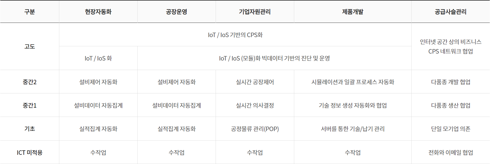

정보화 활용 기술
MES, ERP, CRM, 스마트팩토리, 등대공장, 디지털 트윈, CPS, 인공지능, 빅데이터, 클라우드
정보화 활용기술
- 공급망 관리(SCM) (Supply chain management)
-
- 공급망 관리를 의미하며, 이는 제품 생산을 위한 프로세스를 효율적으로 관리하고, 수요 예측을 통한 재고 관리 등을 포함한다. SCM은 원자재 구매부터 최종 제품 배송까지 모든 과정을 최적화하여 기업 경쟁력을 높이는데 중요한 역할을 한다.
- CRM (Customer relationship management)
-
- 고객 관계 관리를 의미하며, 이는 기업이 고객을 중심으로 비즈니스를 수행하기 위한 방법론으로 고객 정보를 수집하고 분석하여 개인화된 서비스를 제공하고 고객 만족도를 높이며 장기적인 관계를 유지하는 것을 목표로 한다. CRM은 이러한 활동을 지원하는 IT 시스템으로 마케팅, 판매, 서비스 등 여러 부서가 함께 사용할 수 있도록 설계되었다.
- ERP (Enterprise Resource Planning)
-
- 전사적 자원 관리를 의미하며, 이는 기업 내 생산, 재무, 회계, 영업, 구매, 재고 등 전반적인 비즈니스 프로세스를 시스템 하나에서 통합적으로 관리할 수 있게 해 주는 소프트웨어를 말한다. ERP 시스템을 사용하면 데이터 일관성과 정확성이 향상되며, 업무 프로세스 간소화와 생산성 향상을 기대할 수 있다. 대표적인 ERP 솔루션으로는 SAP, Oracle 등이 있다.
- KMS (Knowledge management system)
-
- 지식 관리 시스템으로 조직 내 지식, 정보, 경험 등을 체계적으로 수집, 정리, 공유함으로써 조직 효율성을 높이고자 하는 시스템이다. 이 시스템은 직원들이 필요한 정보를 쉽게 찾을 수 있도록 돕고, 중복된 작업을 줄여주며, 새로운 아이디어나 솔루션을 빠르게 공유할 수 있게 한다. 또한 기존 지식을 재활용하거나 새롭게 조합해 새로운 가치를 창출하는 데도 기여한다. 대표적인 지식 관리 시스템에는 위키, 블로그, 포럼, 소셜 네트워크 플랫폼 등이 있다.
MES
MES(Manufacturing Execution System)는 제조업체 생산 현장과 기업 상위 시스템(예: ERP, 기업 자원 관리 시스템) 간 연결을 담당하는 정보 시스템이다. MES는 생산 과정에서 발생하는 데이터를 실시간으로 수집하고, 이를 분석하여 생산 계획, 품질 관리, 자원 관리 등을 효율적으로 실행할 수 있도록 돕는다. 주로 제조 공장에서 생산 관리, 품질 관리, 추적성 확보 등과 같은 역할을 한다.
- MES의 주요 기능
-
- 생산 계획 실행 (Execution of Production Plans)
- MES는 상위 시스템에서 전달된 생산 계획을 바탕으로 작업 지시서를 생성하고, 이를 실제 생산 현장에서 실행할 수 있도록 돕는다.
- 실시간 데이터 수집 (Real-time Data Collection)
- MES는 생산 설비에서 발생하는 데이터를 실시간으로 수집하여, 생산 현장의 상태를 지속적으로 모니터링하고, 문제가 발생할 경우 즉시 대응할 수 있도록 한다.
- 자원 관리 (Resource Management)
- MES는 생산에 필요한 자원(원자재, 기계, 인력 등)의 관리와 배치를 최적화하여 생산성을 높인다.
- 품질 관리 (Quality Management)
- MES는 품질 검사를 자동화하거나 품질 데이터를 실시간으로 기록하여, 생산 과정에서 발생하는 품질 문제를 즉시 해결할 수 있도록 한다.
- 추적성 (Traceability)
- MES는 제품이 생산되는 과정에서의 모든 정보를 기록하고 관리하여, 생산된 제품의 모든 이력(원자재, 제조 과정 등)을 추적할 수 있다. 이는 리콜 등의 상황에서 중요한 역할을 한다.
- 설비 관리 (Equipment Management)
- 생산 설비의 가동 상태, 유지보수 이력 등을 관리하여 설비 가동률을 최적화하고, 장비 고장을 예방한다.
- 생산 모니터링 (Production Monitoring)
- MES는 생산 현장의 상태를 실시간으로 모니터링하여, 생산 속도, 품질, 설비 가동 상태 등을 지속적으로 점검한다.
- MES의 장점
-
- 실시간 생산 관리
생산 공정의 상태를 실시간으로 파악할 수 있어, 즉각적인 대응이 가능하다. - 효율성 향상
불필요한 작업이나 자원 낭비를 줄이고, 생산성을 높인다. - 품질 개선
품질 데이터를 실시간으로 분석하여, 품질 문제를 미리 예방하고 품질 향상을 유도한다. - 데이터 기반 의사결정
생산 데이터를 바탕으로 보다 정확하고 신속한 의사결정을 내릴 수 있다. - 추적성
제품의 생산 이력을 정확히 추적할 수 있어, 문제 발생 시 원인 분석과 대응이 용이하다.
- 실시간 생산 관리
- MES와 ERP의 차이
-
- ERP(Enterprise Resource Planning)는 기업 전반적인 자원(인사, 회계, 재무, 공급망 등)을 관리하는 시스템이고, MES는 실제 생산 현장에서 작업을 관리하는 시스템이다.
- ERP가 전략적 관점에서 자원을 관리한다면, MES는 현장 중심으로 생산 공정을 실시간으로 관리한다.
결국 MES는 생산 현장에서의 효율적인 운영과 품질 관리에 집중하며, ERP와 협력하여 전체 기업 운영을 최적화하는 중요한 역할을 한다.
MES와 MOM
MES (Manufacturing Execution System)과 MOM (Manufacturing Operations Management)은 모두 제조업에서 생산 관리와 최적화를 위한 중요한 시스템이다. 그러나 두 시스템의 목적, 기능, 범위에서 차이가 있다.
- MES (Manufacturing Execution System)
- MES는 제조 현장에서 생산을 실시간으로 관리하고, 생산 공정의 효율성을 높이며, 품질 관리를 지원하는 시스템이다. MES는 생산 계획을 실제 생산 실행으로 연결하며, 공장 내 작업 흐름을 제어하고 추적한다.
- 주요 기능
-
- 실시간 생산 모니터링: 생산 현장의 작업 상태를 실시간으로 추적하고 관리한다.
- 작업 지시 관리: 작업자에게 필요한 지시 사항을 전달하고, 작업 완료 여부를 추적한다.
- 품질 관리: 제품의 품질 검사 및 추적을 지원하여 불량을 최소화한다.
- 자원 관리: 장비, 재료, 인력 등 자원의 효율적인 배치와 관리를 돕는다.
- 데이터 수집 및 보고: 생산 현장에서 발생하는 데이터를 실시간으로 수집하여 성과 분석 및 보고를 한다.
- 주요 특징
-
- 실시간 공정 제어: 현장의 작업자와 기계 상태를 실시간으로 관리하고, 생산 흐름을 최적화한다.
- 상위 시스템과의 연동: MES는 ERP 시스템이나 SCADA 시스템 등 상위 시스템과 연동되어 데이터를 주고받는다.
- 적용 분야
-
- 생산 계획 및 실행, 품질 관리, 공정 제어, 재고 관리 등 제조 공정의 일상적 운영을 담당한다.
- MOM (Manufacturing Operations Management)
- MOM은 생산 운영 전반을 관리하는 시스템으로, MES를 포함한 더 넓은 범위의 기능을 다룬다. MOM은 생산 공정을 계획하고, 실행하며, 성과를 모니터링하고, 최적화하는 기능을 제공한다. MOM은 제조의 모든 단계를 포괄하며, 전략적인 생산 관리와 운영 최적화를 위한 종합적인 관리 시스템이다.
- 주요 기능
-
- 생산 계획 및 스케줄링: 생산 계획을 수립하고, 이를 실시간으로 조정하여 생산 일정에 맞추도록 한다.
- 자원 최적화: 인력, 기계, 재료의 최적 배치 및 활용을 지원한다.
- 품질 및 성과 관리: 생산 품질 및 작업 성과를 모니터링하고, 개선을 위한 피드백을 제공한다.
- 공급망 관리: 재고 관리와 공급망과의 연계를 통해 원자재와 부품의 흐름을 최적화한다.
- 데이터 분석 및 보고: 생산 데이터를 수집하고 분석하여 효율성을 높이고, 경영진에게 의사결정을 지원하는 보고서를 제공한다.
- 주요 특징
-
- 전방위적인 관리: MOM은 MES, PLM, ERP와 같은 시스템을 통합하여 생산 운영을 전체적으로 관리한다.
- 전체적인 운영 최적화: 생산 효율성, 품질, 비용 등 전반적인 제조 활동을 최적화하려는 목표를 가진다.
- 적용 분야
-
- 생산 계획 수립, 자원 관리, 품질 및 성과 관리, 공급망 최적화 등 제조 운영의 전체적인 관리와 최적화를 담당한다.
- MES와 MOM의 차이점
-
구분 MES (Manufacturing Execution System) MOM (Manufacturing Operations Management) 목표 생산 실행과 실시간 관리, 공정 최적화 전반적인 제조 운영 관리 및 최적화, 전략적 관리 기능 범위 생산 공정 관리, 품질 관리, 자원 관리, 데이터 수집 및 보고 생산 계획, 생산 스케줄링, 자원 최적화, 품질 관리, 성과 분석 및 보고 핵심 요소 실시간 공정 모니터링 및 제어 전반적인 제조 운영의 통합적 관리 상위 시스템과의 연계 MES는 ERP 및 SCADA와 연동하여 실행을 관리 MOM은 MES, ERP, SCM 등의 시스템을 포괄하여 전반적인 제조 운영을 관리 주요 사용자 생산 관리자, 현장 작업자 경영진, 생산 계획 담당자, 공급망 관리자 적용 범위 공장 내 현장 작업, 작업 흐름, 품질 관리 전체 제조 운영, 생산 계획, 자원 관리, 공급망, 품질 및 성과 관리
MES는 주로 제조 현장의 실시간 작업 관리와 공정 제어에 집중하는 시스템으로, 생산 활동을 실제로 실행하는 데 중점을 둔다. MOM은 MES를 포함한 더 넓은 범위의 시스템으로, 생산 계획, 자원 관리, 품질 관리 등 제조 운영 전반을 전략적으로 관리하고 최적화하는 데 중점을 둔다.
따라서 MES는 MOM의 하위 시스템으로 포함될 수 있으며, MOM은 전체적인 제조 운영을 관리하고 최적화하는 데 더 큰 범위와 전략적 접근을 제공한다.
ERP
ERP(Enterprise Resource Planning) 시스템은 기업의 다양한 업무를 통합하고 자동화하여 효율적인 자원 관리와 의사결정을 지원하는 시스템이다. ERP 시스템의 핵심은 다양한 비즈니스 기능을 하나의 시스템으로 통합하는 것이다. 이를 위해 ERP 시스템은 주로 4대 핵심 모듈을 갖추고 있다. 이 4대 핵심 모듈은 다음과 같다.
- 재무 관리(Financial Management)
- 목표: 기업의 재무 상태를 체계적으로 관리하고, 회계, 자금, 세무 관련 업무를 처리한다.
- 기능:
- 회계 처리: 손익계산서, 재무제표 작성 및 관리.
- 자산 관리: 고정 자산의 구매, 유지, 감가상각 등을 관리.
- 세무 관리: 세금 보고, 세금 계산 및 관련 법규 준수.
- 현금 흐름 관리: 자금의 입출금, 예산 관리, 현금 예측.
- 효과: 재무 상태에 대한 실시간 정보 제공, 자금 운용의 효율성 증대.
- 인사 관리(Human Resources Management)
- 목표: 직원과 관련된 데이터를 효율적으로 관리하고, 인사 업무를 자동화하여 인적 자원의 최적화를 지원한다.
- 기능:
- 인력 관리: 직원 정보 관리, 근무 시간, 급여 계산.
- 채용 관리: 구인, 면접, 채용 절차 관리.
- 교육 및 개발: 직원 교육 계획, 훈련 이력 관리.
- 성과 평가: 직원의 업무 성과 및 평가 관리.
- 복리후생: 급여, 보험, 연금 등 복지 혜택 관리.
- 효과: 인사 업무의 효율화 및 직원 관리의 정확성 향상.
- 생산 관리(Production Management)
- 목표: 제조 과정과 관련된 모든 업무를 효율적으로 관리하고, 생산 일정, 품질 관리 등을 최적화한다.
- 기능:
- 생산 계획: 생산 일정 계획 및 자원 배분.
- 품질 관리: 생산 공정의 품질을 관리하고, 품질 검사 및 보고서 작성.
- 재고 관리: 원자재 및 부품 재고를 실시간으로 추적.
- 공정 관리: 각 생산 단계의 작업 흐름을 관리하고 최적화.
- 효과: 생산 과정의 효율화, 재고 비용 절감, 품질 향상.
- 공급망 관리(Supply Chain Management)
- 목표: 원자재 구매부터 최종 소비자에게 제품이 전달되는 모든 과정(구매, 물류 등)을 통합적으로 관리한다.
- 기능:
- 구매 관리: 공급업체와의 거래를 관리하고, 원자재 및 부품 구매를 최적화.
- 물류 관리: 제품의 출고, 배송, 창고 관리.
- 수요 예측: 시장 수요를 예측하여 생산 및 공급 계획에 반영.
- 공급자 관리: 공급망을 관리하고, 공급업체의 성과를 평가.
- 효과: 물류 비용 절감, 납기 일정 준수, 공급망의 효율성 향상.
ERP 시스템의 4대 핵심 모듈은 재무 관리, 인사 관리, 생산 관리, 공급망 관리로 구성되어 있으며, 각 모듈은 기업의 주요 자원과 프로세스를 통합하여 효율적인 운영을 지원한다. 이들 모듈은 실시간 데이터와 정보를 기반으로 의사결정을 돕고, 부서 간 협업을 원활하게 하여 기업의 전반적인 성과를 개선하는 중요한 역할을 한다.
CRM
CRM은 다음과 같은 특징이 있다.
- 구매 고객 전체보다 개별 고객 특성 중시 (고객별 차별 대응)
- 신규 고객 확보보다 기존 고객 유지 중시
- 단기적 성과보다 고객과 장기적 관계 및 가치 중시
- 매출보다 이익 중시
- 고객과 기업, 양측 모두 만족 추구
CRM 전제 조건은 다음과 같다.
- 프로세스 통합
-
- 마켓팅, 판매, 고객 서비스 업무 영역을 통합하여 고객 접촉 단계에 상관없이 단일화된 메시지를 전달 할 수 있도록 구성되어야 함
- 정보 통합
-
- 댜앙한 고객 정보(고객 프로파일 정보, 상품 및 서비스 가입 정보, 서비스 요청 및 처리 이력 정보, 접촉 이력 정보, 빌링 및 납부 정보 등)를 통합하여 다양한 형태로 제공할 수 있어야 함
- 데이터웨어 하우스, 데이터 마이닝 및 분석 도구와 전사적인 정보 공유 체제 확립
- 고객 관점(Channel) 통합
-
- Call Center, 직접 방문 응대, 영업사원, 대리점, e-CRM 등 다양한 고객 접점에서 동일한 고객에 대해 동일한 메시지를 전달할 수 있어야 함
- 내부 고객 관리
-
- 내부 구성원이 고객과의 접점에 위치해 있으므로 구성원들 만족 여부가 고객 충성도에 많은 영향을 미침
- 외부 고객 관리
-
- 우량 고객 선정 요소
- 고객과 기업의 적합성, 고객 관계 지향 성향, 고객의 수익 기여도(현재 + 미래)
- CRM 고객 정보
- 고객과 관계를 이해하는데 필요한 정보와 자료, 관계에 대한 기록으로 고객과의 관계를 개발, 변화 및 유지하는데 활용
- 고객을 지속적으로 관찰/분석하는 과정(고객에 대한 360도 시각)
- CRM 기대 효과
-
업무 영역 CRM 기대 효과 마케팅 기회 분석 수익 및 고객 평생 가치(LTV) 증대
신규 고객 유치 및 기존 고객 활성화
고객 Life Cycle상 결정적 시점에 효과적 마케팅 활동
평생 고객으로 가치를 창출할 수 있게 함
영업지원 활동 시장에서의 경쟁력 있는 제품이 파악 및 신속한 대응 전략 수립
시장에서 경쟁력 있는 제품 파악 및 신속한 대응 전략 수립
수익성 높은 고객 분류와 Target Marketing
마케팅 관리 시장 변화 및 고객 Needs에 맞는 상품 개발
상품에 대한 시장 반응의 신속한 파악 및 보완
고객 Need변화에 대한 신속한 파악 및 대응
고객 서비스 고객 충성도(Loyalty), 유지율 및 고객 만족 증대
고객 행위에 대한 이해
Cross-Selling과 Up-selling 기회 증대 및 활용
고객 채널 관리 고객 Needs에 맞춘 최적 채널 제공
비용을 최소화할 수 있는 고객 유도
스마트팩토리 기술
스마트팩토리
- 스마트팩토리 단계적 구축
-

https://www.smart-factory.kr/usr/pr/sf/ma/smrtFctryIntrcn - 5대 요건
-
- 4M + 1E의 디지털화
- 4M+1E의 각 요소 (Man, Machinery, Material, Method, Environment) 들의 실시간으로 디지털 값을 인지하고, 측정 가능한 정보를 제공해야 하며, 통신을 통해 대화가 가능해야 함
- 지능화
- 알고리즘 또는 인공지능 등의 솔루션을 이용, 최적해 또는 예측가능한 해를 제공해야 함
- 통합
- 사회망과 가치사슬을 통해 단대단 (End-to-end) 의 정보 교류가 이뤄지도록 하는 수평적 통합과 최하위 수준인 기계장치부터 기업비즈니스 수준까지 수직적 통합을 지향
- 엔지니어링 지식의 창출
- 지속해서 정보를 확보하고 저장한 후, 이를 바탕으로 자동화를 위한 제조 지식을 점진적으로 창출할 수 있어야함
- 스마트 시스템과의 연결
- 향후에 발전할 스마트 제품들과 통신 표준에 의거해 연결이 가능해야함
- 4M + 1E의 디지털화
6대 핵심 기술
스마트공장 6대 핵심 기술은 다음과 같다.
- 네트워크화된 센서
- 정보통신기술 인프라
- 데이터 상호운용성
- 새로운 생산시스템
- 지능화된 자동화
- 확장형/다층형 사이버 보안
등대공장
등대공장(Lighthouse Factory)은 산업 혁신과 디지털화를 선도하는 공장을 의미한다. 이 공장들은 첨단 기술과 디지털 혁신을 적용하여 생산성을 높이고, 효율성과 품질을 개선하는 모델을 제시한다. 주로 4차 산업 혁명에 맞춰 스마트 팩토리로 변모한 공장들이다.
- 주요 특징
-
- 디지털화
-
- 등대공장은 IoT (Internet of Things), AI (인공지능), 빅 데이터, 클라우드 컴퓨팅 등의 기술을 통합하여 생산과 관리 과정에서 실시간 데이터 분석과 예측 분석을 활용한다.
- 이를 통해 기계의 상태를 모니터링하고, 제품의 품질을 개선하며, 자동화된 생산 공정을 구현한다.
- 스마트 제조 기술
-
- 로봇, 3D 프린팅, 자율 주행 차량 등의 첨단 제조 기술을 사용하여 작업의 효율성을 높인다.
- 생산 라인에서의 자동화뿐만 아니라, 공급망 관리와 물류 등 전반적인 제조 환경에 디지털 기술을 적용해 유연성과 효율성을 극대화한다.
- 데이터 기반 의사결정
-
- 생산 데이터와 시장 데이터를 통합하여 실시간 의사결정을 할 수 있다. 예를 들어, 기계 고장 예측을 통해 미리 점검하거나 생산 일정 조정을 최적화한다.
- 고객 요구사항이나 시장의 변화를 빠르게 반영할 수 있어 고객 맞춤형 생산이 가능해진다.
- 지속 가능성
-
- 환경 친화적이고 에너지 효율이 높은 기술을 적용하여 지속 가능한 생산 공정을 구현한다.
- 폐기물 최소화, 에너지 절감, 리사이클링 등 친환경적인 방법을 통해 기업의 지속 가능성을 높이고, 사회적 책임을 다하는 방향으로 운영된다.
- 등대공장의 역할
-
- 산업 혁신의 선도자
등대공장은 새로운 기술과 혁신적인 생산 방법을 도입하고 이를 확산시키는 역할을 한다. 이들은 산업 전반에 걸친 기술 발전의 모범 사례로, 다른 기업들에게 혁신적인 방법을 제시한다. - 스마트 제조의 시험장
등대공장은 다양한 스마트 제조 기술을 테스트하고 검증하는 장소로 활용되며, 다른 기업들이 이를 따라 할 수 있도록 기술 확산의 중심지 역할을 한다. - 디지털화의 비전 제시
특히 디지털 트랜스포메이션을 이끌어 가는 공장으로, 기업들이 변화하는 시장 환경에 대응하기 위해 디지털화를 어떻게 적용해야 할지에 대한 비전을 제시한다.
- 산업 혁신의 선도자
- 대표적인 등대공장 사례
-
- 시멘스(Siemens) 암베르크 공장
- 독일의 시멘스는 스마트 제조 기술을 도입하여 자동화, 로봇 기술, 빅 데이터를 활용해 높은 효율성을 달성한 공장이다.
- GE의 스마트 가전 공장
- GE는 3D 프린팅, 모바일 기술, 로봇 공학을 활용하여 생산을 최적화하고, 다양한 소비자 요구에 맞춘 맞춤형 제품을 생산하는 등대공장으로 유명하다.
- 한국에서는 2019년 포스코의 포항제철소가 첫 등대공장에 선정된 이래 LS일렉트릭 청주공장, LG전자의 창원공장과 미국 테네시 공장, 아모레퍼시픽의 뷰티파크(오산), 한국수자원공사의 화성 AI 정수장 등이 선정됐다.1
등대공장은 디지털 기술과 스마트 제조를 통해 혁신적이고 효율적인 생산 방식을 제시하는 공장이다. 이는 다른 기업들이 4차 산업 혁명 시대에 맞춰 기술 혁신을 어떻게 도입하고 적용할 수 있는지에 대한 비전과 전략을 제공한다.
Dark Factory
Dark Factory는 자동화된 시스템을 통해 운영되는 공장을 의미한다. 이 용어는 “어두운” 공장을 의미하는데, 이는 공장이 물리적으로 조명이 필요 없을 정도로 사람의 개입 없이 자동화된 시스템만으로 운영되기 때문이다. 일반적으로, Dark Factory는 사람이 작업을 하지 않거나 최소한의 사람이 관리하는 환경을 뜻한다.
- Dark Factory의 주요 특징
-
- 자동화
생산 과정의 대부분이 로봇, 자동화된 기계, 컴퓨터 제어 시스템 등에 의해 이루어진다. 이는 사람의 개입을 최소화하고, 공장 내에서 물리적 작업을 줄인다. - 무인 운영
자동화된 시스템 덕분에 사람의 직접적인 작업이 필요하지 않아, 공장은 어두운 환경에서도 운영이 가능하다. 대부분의 경우, 공장의 모든 운영과 관리가 컴퓨터 시스템을 통해 이루어진다. - 최적화된 효율성
24시간 자동화된 생산 시스템을 통해 지속적으로 제품을 생산할 수 있어 생산 효율성이 크게 향상된다. - 비용 절감
사람을 위한 작업 환경을 준비할 필요가 없기 때문에, 비용이 절감된다. 또한 인건비를 줄일 수 있어 전체 운영 비용을 낮출 수 있다. - 작업 환경의 안전성
인간 작업자가 필요하지 않거나 최소화되기 때문에, 위험한 작업 환경에서 발생할 수 있는 사고를 줄일 수 있다.
- 자동화
- Dark Factory의 장점
-
- 생산성 증가: 인간의 개입이 최소화되고 자동화된 시스템은 24시간 운영될 수 있기 때문에 생산성이 높아진다.
- 비용 절감: 인건비를 줄일 수 있으며, 공장 내 안전 사고의 발생 가능성도 감소하여 관련 비용이 줄어든다.
- 정밀도와 품질 향상: 자동화된 시스템은 일정한 품질을 유지하며 작업을 할 수 있어 품질의 일관성을 보장할 수 있다.
- Dark Factory의 단점
-
- 초기 투자 비용: 자동화 시스템 구축에 드는 초기 비용이 매우 높을 수 있다. 로봇, 자동화 기계, 소프트웨어 등 고급 기술이 필요하기 때문에 설비 비용이 많이 든다.
- 유연성 부족: 자동화된 시스템은 일정한 작업을 계속 반복하는 데 유리하지만, 변화가 필요한 상황에서 유연하게 대응하기 어려울 수 있다.
- 기술 의존도: 자동화 시스템에 의존하므로, 시스템의 고장이나 오류 발생 시 큰 영향을 받을 수 있다.
Dark Factory는 산업 현장에서 사람의 개입을 최소화하고, 자동화된 시스템을 통해 효율적인 생산을 달성하는 매우 진보된 생산 시스템이다. 이 개념은 특히 스마트 팩토리와 산업 4.0의 핵심 요소 중 하나로, 미래의 제조업에서 중요한 역할을 할 것으로 예상된다.
CPS
CPS(Cyber-Physical System)는 물리적 시스템과 컴퓨터 시스템이 상호작용하며 실시간으로 데이터를 처리하고 제어하는 시스템을 의미한다. 이러한 시스템은 센서, 액추에이터, 제어 시스템, 컴퓨터 네트워크 등을 포함하여, 물리적 세계와 디지털 세계가 긴밀하게 결합된 구조를 가진다.
- 주요 특징
-
- 물리적 시스템과 디지털 시스템의 통합
- CPS는 물리적 장치와 이를 제어하는 컴퓨터 시스템을 결합하여, 현실 세계에서 발생하는 데이터를 실시간으로 처리하고 반응함
- 실시간 처리
- CPS는 실시간으로 데이터를 수집하고 분석하여, 물리적 환경에 즉시 반응함
- 상호작용
- CPS는 센서와 액추에이터를 통해 물리적 환경을 감지하고 제어하며, 이 과정에서 컴퓨터 시스템이 중요한 역할을 함
- 네트워크 연결
- CPS는 인터넷을 통한 상호 연결을 통해 다양한 장치들과 정보를 주고받으며 협력함
- 적용 예시
-
- 스마트 홈 시스템: 집안의 온도, 조명, 보안 시스템 등을 실시간으로 제어하고 모니터링함
- 자율 주행 차량: 자동차가 센서와 컴퓨터 시스템을 통해 도로 상황을 인식하고, 안전하게 운전 결정을 내림
- 산업 자동화 시스템: 제조 공정에서 센서와 로봇을 이용해 생산 과정과 품질을 실시간으로 관리함
| 장점 | 단점 |
|---|---|
| 효율성 향상: 실시간으로 데이터를 처리하고 제어하여 시스템의 전체적인 효율성을 높임 | 시스템의 복잡성: 다양한 구성 요소와 상호작용으로 인해 시스템 설계와 유지 관리가 복잡함 |
| 자동화: 사람의 개입 없이 자동으로 작업을 수행함으로써 반복적인 작업을 줄이고, 인적 오류를 최소화함 | 보안 문제: 네트워크 연결로 인해 해킹, 데이터 유출 등의 보안 위협에 취약할 수 있음 |
| 안전성 증대: 센서와 제어 시스템이 상호작용하여 잠재적 위험을 실시간으로 감지하고 대응함 | 높은 비용: 고도의 기술적 요구와 장비가 필요하여 초기 구축 비용이 매우 높을 수 있음 |
VR
가상현실(Virtual Reality, VR)은 컴퓨터로 생성된 가상 환경에 사용자가 몰입할 수 있게 해주는 기술을 의미한다. VR 기술을 통해 사용자는 현실과는 다른 가상의 세계를 체험할 수 있으며, 주로 시각, 청각, 촉각 등을 이용해 몰입감을 높인다.
- 가상현실의 주요 특징
-
- 몰입감
VR은 사용자에게 완전한 몰입감을 제공한다. 헤드셋을 착용하고 가상의 환경 속에 들어가면, 실제처럼 느껴지는 환경을 경험할 수 있다. - 인터랙티브
VR은 사용자가 환경 내에서 자유롭게 움직이거나 상호작용할 수 있게 해 준다. 이를 통해 실시간으로 반응하고 조작할 수 있는 경험을 제공한다. - 3D 환경
VR은 가상의 환경을 3D로 구성하여, 현실감 넘치는 공간을 구현한다. 이로 인해 사용자는 이 공간 안에서 이동하거나 물체와 상호작용할 수 있다.
- 몰입감
- VR을 이용한 응용 분야
-
- 게임
VR은 게임 산업에서 가장 많이 활용되는 기술 중 하나이다. 사용자는 게임 속 캐릭터가 되어, 가상 환경에서 실시간으로 게임을 즐길 수 있다. - 교육
VR은 가상 교실이나 실험실을 만들어, 학생들이 현실에서는 경험할 수 없는 상황을 안전하게 배울 수 있도록 도와 준다. - 의료
VR을 이용해 수술을 연습하거나, 치료용으로 사용되기도 한다. 예를 들어, PTSD(외상 후 스트레스 장애) 치료에 가상현실을 이용한 노출 치료가 진행되기도 한다. - 건축 및 디자인
건축가들이 VR을 이용하여 설계한 건물이나 공간을 가상으로 미리 보고, 실제 환경에서 어떤 모습일지 체험할 수 있다. - 관광
VR을 이용한 가상 여행은 물리적으로 이동할 수 없는 장소나 상황을 체험하는 방법으로 활용된다.
- 게임
- 사용 장비
-
- VR 헤드셋
가상현실 환경을 보기 위해 사용하는 장치로, 예를 들어 Oculus Rift, HTC Vive, PlayStation VR 등이 있다. - 컨트롤러
가상세계와 상호작용하기 위해 사용하는 장치이다. 손 모양을 추적하거나 버튼을 눌러 다양한 활동을 할 수 있다. - 모션 추적 장치
사용자의 움직임을 감지하여 가상 환경에 반영하는 센서나 카메라를 사용하기도 한다.
- VR 헤드셋
AR
증강현실(Augmented Reality, AR)은 현실 세계에 가상 정보를 실시간으로 덧붙여서 보여주는 기술이다. 즉, 사용자에게 실제 환경과 가상 환경을 동시에 경험하게 하는 기술로, 현실과 가상 요소가 실시간으로 결합되어 새로운 형태로 경험이 제공된다.
- 증강현실의 주요 특징
-
- 실시간 상호작용 사용자와 환경 간의 실시간 상호작용을 지원한다. 예를 들어, 사용자가 스마트폰을 이용해 카메라로 현실을 비추면, 그 화면에 가상 객체가 실시간으로 겹쳐 보여진다.
- 현실과 가상 정보 결합
현실 세계에 가상 객체나 정보를 덧붙여서 제공하므로, 사용자는 실제 환경을 바탕으로 추가된 정보를 확인할 수 있다. - 위치 기반 서비스
GPS나 센서를 활용해 사용자의 위치를 파악하고, 그 위치에 맞는 가상 정보를 제공하는 것이 가능하다. 예를 들어, 특정 장소에서만 나타나는 가상 객체를 보여주는 방식이다.
- 증강현실의 구성 요소
-
- 하드웨어
AR 기술을 구현하기 위한 장치로, 스마트폰, 태블릿, AR 안경(예: Microsoft HoloLens, Magic Leap) 등이 있다. - 소프트웨어
AR 환경을 구현하는 앱이나 프로그램으로, 현실 세계 영상과 가상 객체를 실시간으로 결합하고 이를 표시하는 소프트웨어가 필요하다. 예를 들어, ARKit(애플), ARCore(구글) 등이 있다. - 인터페이스
사용자와 가상 객체 간 상호작용을 가능하게 하는 시스템으로, 화면 터치, 음성 인식, 제스처 인식 등이 포함된다.
- 하드웨어
- 증강현실의 적용 분야
-
- 게임
포켓몬 GO와 같은 게임은 증강현실 기술을 활용하여, 현실 세계에서 가상 캐릭터를 찾아내고 상호작용할 수 있도록 한다. - 교육
AR을 활용한 학습은 학습자가 현실 세계와 가상 정보를 동시에 경험하면서 보다 직관적이고 몰입감 있는 학습을 할 수 있게 해준다. 예를 들어, 해부학 수업에서 AR로 인체 3D 모델을 실시간으로 보는 방식이다. - 의료
의사들이 AR을 이용해 환자의 신체 상태를 실시간으로 확인하거나 수술 중에 중요한 정보를 가상 화면으로 제공받을 수 있다. - 상업 및 쇼핑
가상으로 제품을 미리 보고 구매할 수 있도록 돕는 AR 기술이 쇼핑몰이나 온라인 쇼핑에서 점점 더 많이 사용되고 있다. 예를 들어, 가구를 구매하기 전에 집에 어떻게 배치될지 AR로 미리 확인할 수 있다. - 관광 및 내비게이션
AR을 활용한 관광 안내 시스템은 현실 세계에 가상 관광 정보나 경로를 덧붙여 여행객이 더욱 쉽게 목적지를 찾을 수 있도록 도와준다.
- 게임
- 증강현실의 장점
-
- 직관적이고 몰입감 있는 경험을 제공하여 사용자가 더욱 쉽게 정보를 이해하고, 상호작용할 수 있도록 한다.
- 현실 세계와 가상 정보를 실시간으로 결합함으로써, 다양한 산업에서 실용적인 활용이 가능하다.
- 위치 기반 서비스나 맞춤형 정보 제공이 가능하여, 개인화된 경험을 제공할 수 있다.
- 증강현실의 한계
-
- 기술적 한계: 현재 AR 기술은 하드웨어나 소프트웨어 성능에 따라 경험하는 질이 달라지며, 완벽한 현실과 가상 정보 결합은 아직 기술적으로 도전적인 과제가 될 수 있다.
- 비용 문제: AR을 구현하기 위한 장치나 소프트웨어가 고가일 수 있으며, 이는 상용화와 대중화에 장애물이 될 수 있습니다.
- 지속적인 개발 필요: AR 기술은 계속해서 발전하고 있지만, 아직 많은 분야에서 적용이 제한적이다.
증강현실은 실제 환경에 가상 정보를 덧붙여 새로운 경험을 제공하는 혁신적인 기술이다. 다양한 산업에서 유용하게 활용될 수 있으며, 앞으로 더욱 발전하면서 우리 일상 뿐만아니라 생산 현장에도 많은 변화를 가져올 것으로 기대된다.
인공지능(AI)
인공지능(AI, Artificial Intelligence)은 인간의 학습, 추론, 문제 해결, 지각, 언어 이해 등 지능적인 행동을 모방하는 기술이다. 컴퓨터가 데이터를 기반으로 패턴을 학습하고, 인간처럼 사고하거나 결정을 내릴 수 있도록 설계된다.
- 인공지능의 분류
-
분류 세부 항목 설명 예시 기능적 분류 좁은 인공지능 (Narrow AI) 특정 작업에 특화된 인공지능 음성 인식(시리, 구글 어시스턴트), 이미지 분석 일반 인공지능 (General AI) 인간처럼 다양한 작업을 수행할 수 있는 인공지능 아직 개발 단계에 있음 초인공지능 (Super AI) 인간의 지능을 뛰어넘는 수준의 인공지능(이론적 단계) 이론적 개념으로 존재 기술적 분류 머신러닝 (Machine Learning) 데이터에서 패턴을 학습하여 스스로 개선하는 알고리즘 스팸 필터, 추천 시스템 딥러닝 (Deep Learning) 인공신경망(ANN)을 기반으로 한 머신러닝의 고도화 기술 자율주행, 이미지 생성 AI 자연어 처리 (NLP) 인간의 언어를 이해하고 생성하는 기술 번역기, 챗봇 컴퓨터 비전 (Computer Vision) 이미지와 영상을 분석하여 인식하는 기술 얼굴 인식, 의료 영상 분석 - 기계학습 3가지 학습 방법
-
구분 정의 목표 예시 지도학습 (Supervised Learning) 입력 데이터와 그에 대응하는 레이블(정답)을 제공하여 모델을 학습시킨다. 주어진 입력에 대해 올바른 출력을 예측할 수 있도록 모델을 훈련시킨다. 스팸 이메일 분류, 이미지 인식에서 개와 고양이를 구별하는 모델 학습. 비지도학습 (Unsupervised Learning) 입력 데이터만 제공하고, 데이터 내에서 패턴이나 구조를 스스로 찾아낸다. 데이터의 숨겨진 구조나 분포를 파악하여 군집화나 차원 축소를 수행한다. 고객 세그먼트 분류, 비슷한 특성을 가진 데이터 그룹화. 강화학습 (Reinforcement Learning) 에이전트가 환경과 상호작용하면서 보상(또는 벌)을 받아 최적의 행동을 학습한다. 보상을 최대화하는 행동 전략을 학습하여 주어진 문제를 해결한다. 게임에서 에이전트가 점수를 최대화하는 방법을 배우는 것, 로봇이 주어진 목표를 달성하는 방법을 학습하는 것. - 인공지능의 주요 기술 및 응용 분야
-
분야 활용 예시 세부 내용 의료 질병 진단, 신약 개발, 의료 영상 분석 AI 기반 암 진단 시스템, 신약 개발 과정에서의 데이터 분석 제조업 품질 검사, 예측 유지보수, 생산 자동화 자동화된 생산 라인, 예측 유지보수 시스템, 품질 검사 AI 자동차 자율주행, 차량 안전 시스템 자율주행 기술, 운전 보조 시스템, 차량의 사고 예방 기술 금융 사기 탐지, 주식 거래 알고리즘, 고객 서비스 AI 기반 사기 탐지, 알고리즘 트레이딩, 고객 서비스 챗봇 교육 맞춤형 학습 시스템, 자동 채점 시스템 학생의 학습 성과 분석, AI 기반 자동 채점 및 맞춤형 학습 경로 제공 엔터테인먼트 콘텐츠 추천, 게임 AI, 영상 및 음악 생성 영화 추천 시스템, 게임의 인공지능, AI 기반 음악 및 영상 생성 - 장점과 한계
-
장점 한계 대량의 데이터 분석 및 패턴 발견 윤리적 문제(프라이버시, 일자리 대체) 인간이 하기 어려운 반복 작업 자동화 데이터 편향(bias) 문제 새로운 기술 및 제품 개발 촉진 설명 가능성(Explainability)의 부족 - 미래 전망
-
- 인공지능은 4차 산업혁명의 핵심 기술로, 다양한 산업의 혁신을 이끌고 있다.
- AI와 인간의 협업이 강화되고, 윤리적 AI 개발이 중요해질 전망이다.
- AI는 의료, 에너지, 환경 등 사회적 문제 해결에 기여할 것으로 기대된다.
- 인공지능은 4차 산업혁명의 핵심 기술로, 다양한 산업의 혁신을 이끌고 있다.
클라우드
클라우드(Cloud)는 스마트팩토리에서 데이터 저장, 처리, 분석을 위한 핵심 기술 중 하나로, 인터넷을 통해 서버, 스토리지, 소프트웨어 등을 제공하는 클라우드 컴퓨팅(Cloud Computing) 기술을 의미한다. 이를 통해 스마트팩토리는 실시간 데이터 공유, 원격 관리, 확장성 있는 운영이 가능해진다.
- 클라우드의 주요 특징
-
- 온디맨드(On-Demand) 서비스: 필요한 만큼만 자원을 사용하고 비용을 지불
- 확장성(Scalability): 기업의 필요에 따라 컴퓨팅 자원 확장 또는 축소 가능
- 원격 접근(Remote Access): 인터넷을 통해 어디서든 데이터 접근 및 관리 가능
- 자동 업데이트(Auto Update): 소프트웨어 및 보안 패치 자동 적용
- 온디맨드(On-Demand) 서비스: 필요한 만큼만 자원을 사용하고 비용을 지불
| 활용 분야 | 설명 |
|---|---|
| 데이터 저장 및 관리 | 생산 데이터, 설비 운영 정보 등을 중앙 클라우드 서버에 저장 및 관리 |
| 실시간 모니터링 | 클라우드 기반 IoT 센서를 활용해 공장 가동 상태를 실시간으로 확인 |
| AI 및 빅데이터 분석 | 클라우드에서 머신러닝 및 빅데이터 분석을 수행하여 생산성 향상 |
| 공급망(SCM) 통합 | 클라우드를 통해 협력업체 및 공급업체와 실시간 데이터 공유 |
| 스마트 유지보수 | 클라우드 기반 예측 유지보수를 적용하여 장비 고장을 사전에 예방 |
| 장점 | 단점 |
|---|---|
| 초기 인프라 구축 비용 절감 | 보안 및 데이터 유출 위험 |
| 데이터 접근성 및 유연성 증가 | 인터넷 연결 의존도 높음 |
| 실시간 데이터 공유 및 협업 가능 | 클라우드 서비스 장애 발생 가능 |
| 최신 기술(빅데이터, AI 등) 활용 가능 | 벤더 종속성(Vendor Lock-in) 문제 발생 가능 |
| 유형 | 설명 | 예시 |
|---|---|---|
| IaaS (Infrastructure as a Service) |
가상 서버, 스토리지 등 인프라 제공 | AWS EC2, Google Compute Engine |
| PaaS (Platform as a Service) |
애플리케이션 개발 및 배포 환경 제공 | Microsoft Azure, Google App Engine |
| SaaS (Software as a Service) |
인터넷을 통한 소프트웨어 서비스 제공 | Google Drive, Microsoft 365 |
스마트팩토리에서 클라우드는 공장 운영의 효율성을 높이고, 실시간 데이터 활용을 가능하게 하며, 예측 유지보수 및 AI 분석을 통해 생산성을 극대화하는 중요한 기술로 자리 잡고 있다.
빅데이터
빅데이터(Big Data)는 대량의 데이터에서 의미 있는 패턴을 추출하고 분석하여 의사결정에 활용하는 기술로, 스마트팩토리의 핵심 요소 중 하나이다. 스마트팩토리에서는 생산 공정, 설비 상태, 품질 검사, 물류, 공급망 등 다양한 데이터가 생성되며, 이를 효과적으로 분석하면 생산성 향상, 비용 절감, 품질 개선 등의 이점을 얻을 수 있다.
| 특징 | 설명 |
|---|---|
| Volume(규모) | 방대한 양의 데이터가 실시간으로 생성됨 |
| Velocity(속도) | 초고속으로 데이터를 수집하고 처리해야 함 |
| Variety(다양성) | 정형 데이터(수치, 표)부터 비정형 데이터(영상, 센서 로그)까지 포함 |
| Veracity(정확성) | 데이터의 신뢰성과 정확성이 중요함 |
| Value(가치) | 분석을 통해 경영, 생산성, 유지보수 등에 활용 가능 |
| 활용 분야 | 설명 |
|---|---|
| 예측 유지보수(Predictive Maintenance) | 설비 센서 데이터를 분석하여 고장 발생 전에 예방 조치 |
| 생산 공정 최적화 | 실시간 데이터 분석을 통해 생산 라인의 병목현상 제거 및 효율 극대화 |
| 품질 관리(Quality Control) | 머신러닝을 활용한 불량품 예측 및 실시간 검사 시스템 구축 |
| 공급망 관리(SCM) | 재고 수준, 물류 흐름을 최적화하여 비용 절감 및 납기 단축 |
| 에너지 효율 최적화 | 공장 내 에너지 소비 패턴을 분석하여 비용 절감 및 탄소 배출 최소화 |
| 장점 | 단점 |
|---|---|
| 실시간 데이터 분석을 통한 빠른 의사결정 | 데이터 저장 및 처리 비용이 높음 |
| 공정 자동화 및 품질 개선 가능 | 대량 데이터 분석을 위한 고급 기술이 필요함 |
| 설비 유지보수 비용 절감 | 데이터 보안 및 개인정보 보호 문제 발생 가능 |
| 공급망 최적화를 통해 운영 효율성 증가 | 데이터 정제 및 품질 확보가 중요함 |
| 기술 | 설명 |
|---|---|
| IoT 센서 | 공장 내 설비 및 환경 데이터를 수집 |
| AI & 머신러닝 | 빅데이터를 분석하여 패턴 및 이상 탐지 |
| 클라우드 컴퓨팅 | 대규모 데이터를 저장하고 고속으로 처리 |
| 엣지 컴퓨팅 | 현장에서 실시간 데이터 처리하여 응답 속도 향상 |
| 데이터 마이닝 | 데이터에서 유의미한 패턴을 추출하여 인사이트 제공 |
빅데이터는 스마트팩토리의 핵심 기술 중 하나로, 데이터 기반 의사결정을 가능하게 하고 생산성 및 품질을 향상시키는 중요한 역할을 수행한다.
RFID
RFID (Radio Frequency Identification)는 무선 주파수를 이용하여 객체나 사람의 정보를 자동으로 식별하고 추적할 수 있는 기술이다. RFID 시스템은 태그(Tag), 리더(Reader), 그리고 백엔드 시스템으로 구성되며, 다양한 분야에서 자동화, 효율성 향상, 데이터 관리 등의 목적으로 사용된다.
- 구성요소
-
구성 요소 설명 RFID 태그 (Tag) 정보를 저장하고 리더의 신호를 수신하여 데이터를 전송하는 장치. 두 가지 유형이 있다. 수동형 태그 (Passive Tag): 자체 전원이 없이 리더의 신호를 이용하여 작동, 가격 저렴하고 배터리 수명 길다. 능동형 태그 (Active Tag): 자체 전원을 가지고 있어 긴 거리에서 데이터 전송 가능, 비쌌지만 긴 거리에서 사용된다. RFID 리더 (Reader) RFID 태그의 신호를 수신하여 데이터를 읽고 전송하는 장치, 여러 주파수 대역에서 동작할 수 있다. 백엔드 시스템 (Backend System) 리더로부터 수집된 데이터를 처리하고 저장하는 시스템, 보통 데이터베이스나 ERP 시스템과 연계된다. - RFID의 동작 원리
-
- RFID 시스템은 리더가 발산한 전파에 의해 태그가 활성화되고, 태그는 자기 식별 정보를 무선으로 리더에 전송한다.
- 리더는 이를 수신하고, 해당 정보를 백엔드 시스템에 전달하여 필요한 처리를 진행한다.
- RFID의 주요 응용 분야
-
분야 활용 예시 세부 내용 물류 및 공급망 관리 재고 관리 RFID를 사용하여 물품을 실시간으로 추적하고 재고 상황을 자동으로 파악 제품 추적 제품이 생산라인에서부터 유통망을 거쳐 소비자에게 도달하는 과정까지 자동으로 추적 교통 및 차량 관리 전자태그 RFID를 이용한 자동차 번호판 인식으로 주차장 통행료 징수, 자동차 출입 관리 가능 교통 통제 자동차 운행 기록과 통행료 징수를 자동화하여 도로 시스템의 효율성 증가 헬스케어 환자 추적 RFID 태그를 환자에게 부착하여 병원 내 위치를 추적하고 의료 기록을 자동으로 업데이트 약품 관리 약품의 유통 및 재고를 RFID로 자동 추적하여 효율적인 관리 가능 소매업 자산 추적 RFID를 이용하여 매장 내 상품 위치와 재고를 실시간으로 관리하고 도난 방지 기능 제공 자동 결제 RFID 태그가 부착된 제품을 리더에 태그하면 자동으로 결제가 이루어지는 시스템 가능 동물 관리 동물 추적 RFID 태그를 이용하여 동물의 위치 및 상태 추적, 관리 가능 - 장점과 한계
-
장점 한계 자동화: 수작업 없이 자동으로 정보 추적이 가능하여 효율성 향상 비용 문제: 일부 능동형 태그나 고급 시스템은 높은 초기 비용을 요구 실시간 데이터 처리: 데이터를 실시간으로 추적하고 즉각적인 반응 가능 신호 간섭: 금속이나 액체가 신호를 방해할 수 있어 특정 환경에서 신호 간섭 발생 비접촉식 작업: 비접촉식으로 데이터를 읽을 수 있어 위생적이고 편리 보안 문제: 데이터의 무선 전송 과정에서 해킹이나 위조 등의 보안 위협 존재
RFID는 물류, 헬스케어, 교통 등 다양한 분야에서 효율적인 관리와 자동화를 가능하게 하는 혁신적인 기술이다. 다만, 초기 비용과 보안 문제 등의 한계가 있으므로, 이를 고려한 적절한 활용이 필요하다.
IoT
IoT (Internet of Things, 사물인터넷)는 물리적 장치와 객체들이 인터넷을 통해 서로 연결되어 데이터를 주고받으며 상호작용하는 기술을 의미한다. IoT는 다양한 기기들이 인터넷에 연결되어, 이를 통해 실시간으로 정보를 수집하고 전달하며, 자동화된 방식으로 의사결정을 할 수 있게 한다.
예를 들어, 스마트폰, 스마트홈 장치(조명, 온도조절기, 보안 카메라 등), 웨어러블 기기(스마트워치, 피트니스 트래커 등), 자동차, 심지어 농업 장비까지 다양한 사물들이 IoT 기술을 활용하고 있다. 이 기술은 일상 생활에서 편리함을 높이고, 산업 분야에서 효율성을 증대시킬 수 있다.
- IoT 주요 특징
-
- 연결성
- 다양한 장치들을 인터넷이나 다른 네트워크를 통해 연결되어 상호작용한다.
- 데이터 수집 및 처리
- 기기에서 데이터를 수집하고 이를 실시간으로 분석하고 활용한다.
- 자동화 및 제어
- IoT 기기들은 설정된 규칙에 따라 자동으로 동작하거나 원격제어할 수 있다.
- 효율성
- IoT 기술을 통해 데이터 기반 의사결정이 가능해져 더 효율적인 운영이 가능하다.
- 예시
-
- 스마트홈
스마트폰을 통해 집의 온도를 조절하거나, 자동으로 불을 켜고 끌 수 있는 시스템 - 스마트 시티
교통 신호를 자동으로 조정하거나, 공공시설의 에너지 사용을 모니터링하여 효율성을 높이는 시스템 - 헬스케어
웨어러블 기기를 통해 실시간으로 건강 데이터를 모니터링하고, 이를 기반으로 의료 전문가와 소통
- 스마트홈
Real-Time Management
Real-Time Management(실시간 관리)는 기업이나 조직에서 발생하는 데이터를 즉시 수집, 분석, 그리고 처리하여 신속하게 의사결정을 내리고 문제를 해결하는 관리 방식이다. 이는 생산, 물류, 고객 서비스, IT 시스템 등 다양한 분야에서 활용되며, 상황 변화에 빠르게 대응해 운영 효율성과 경쟁력을 극대화하는 데 목적이 있다.
- Real-Time Management의 주요 특징
-
- 즉각적인 데이터 처리 및 분석
- 센서, IoT, ERP 시스템 등에서 실시간으로 데이터를 수집하고 분석해 빠르게 필요한 조치를 취한다.
- 센서, IoT, ERP 시스템 등에서 실시간으로 데이터를 수집하고 분석해 빠르게 필요한 조치를 취한다.
- 신속한 의사결정
- 관리자나 시스템이 상황을 실시간으로 파악하고, 최적의 의사결정을 내릴 수 있도록 지원한다.
- 관리자나 시스템이 상황을 실시간으로 파악하고, 최적의 의사결정을 내릴 수 있도록 지원한다.
- 문제 예방 및 해결
- 문제가 발생하기 전에 조기 경고 시스템을 통해 위험을 감지하고, 즉각적인 대응이 가능하다.
- 즉각적인 데이터 처리 및 분석
- Real-Time Management의 적용 분야
-
- 제조업: 생산 라인의 실시간 모니터링을 통해 설비 고장 및 품질 문제를 즉시 파악하고 대응
- 물류 및 공급망 관리: 실시간 재고 관리 및 배송 상태 추적으로 공급망 효율성 향상
- 고객 서비스: 고객 문의나 불만을 실시간으로 처리해 만족도를 높임
- 금융 및 IT: 실시간 거래 데이터 분석을 통해 보안 위협 감지 및 빠른 거래 처리
- 제조업: 생산 라인의 실시간 모니터링을 통해 설비 고장 및 품질 문제를 즉시 파악하고 대응
Real-Time Management는 빠르게 변화하는 시장 환경에서 기업이 민첩하게 대응하고, 지속적인 성장을 이루기 위한 핵심 전략으로 자리 잡고 있다.
On-Line System
On-Line System은 사용자와 컴퓨터 시스템이 실시간으로 직접 연결되어 상호 작용하는 방식의 시스템을 의미한다. 사용자가 입력한 데이터가 즉시 처리되고, 결과가 곧바로 반환되는 것이 특징이다. 이 시스템은 네트워크나 통신 기술을 활용해 데이터 전송과 처리를 실시간으로 수행하며, 다양한 분야에서 빠르고 정확한 업무 처리를 가능하게 한다.
- On-Line System의 주요 특징
-
- 실시간 처리: 사용자의 요청이 즉시 처리되며, 결과가 빠르게 반환된다.
- 직접 연결: 사용자와 시스템이 네트워크로 연결되어 지속적인 데이터 교환이 이루어진다.
- 자동 업데이트: 데이터가 실시간으로 업데이트되어 항상 최신 상태를 유지한다.
- 높은 접근성: 어디서나 인터넷을 통해 시스템에 접근할 수 있다.
- 실시간 처리: 사용자의 요청이 즉시 처리되며, 결과가 빠르게 반환된다.
- On-Line System의 적용 분야
-
- 금융 및 은행 시스템: 인터넷 뱅킹, 카드 결제 시스템
- 전자 상거래: 온라인 쇼핑, 결제 및 재고 관리
- 공공 서비스: 온라인 민원 처리, 병원 예약 시스템
- 생산 및 물류: 실시간 재고 관리, 주문 처리 시스템
- 금융 및 은행 시스템: 인터넷 뱅킹, 카드 결제 시스템
On-Line System은 효율성과 편의성을 높이고, 기업과 고객 모두에게 신속하고 정확한 서비스를 제공하는 데 중요한 역할을 한다.
Paperless
Paperless(무지류화)는 종이 문서 대신 전자적 방법을 사용하여 정보를 저장, 처리, 전달하는 시스템 또는 방식을 의미한다. 이는 종이를 사용하는 대신 디지털 형식으로 데이터를 관리하고, 전자메일, 클라우드 서비스, 전자 서명 등을 통해 문서를 처리하는 방식이다. 무지류화는 환경 보호, 비용 절감, 업무 효율성 향상 등 여러 장점을 제공하며, 다양한 산업 분야에서 점차 채택되고 있다.
- Paperless의 주요 특징
-
- 디지털화: 모든 문서와 데이터를 전자적인 형태로 변환하여 저장하고 관리한다.
- 전자 서명: 종이 서명 대신 전자 서명을 이용해 법적 효력을 가진 문서를 처리한다.
- 정보 접근성: 클라우드나 서버를 통해 언제 어디서나 문서에 접근하고 관리할 수 있다.
- 환경 보호: 종이를 사용하는 양을 줄여 환경에 미치는 영향을 최소화한다.
- 효율성 증대: 문서의 검색, 수정, 공유가 디지털 방식으로 빠르고 효율적으로 이루어진다.
- Paperless의 적용 분야
-
- 사무실 및 행정 업무: 문서 관리 시스템, 전자메일, 전자 결재 시스템 등
- 금융 산업: 전자 송금, 온라인 뱅킹, 전자 영수증
- 교육: 디지털 교재, 온라인 과제 제출, 전자 시험
- 법률: 전자 서명, 전자 계약서
Paperless 시스템은 종이 문서를 대체함으로써 비용을 절감하고 업무의 속도와 정확성을 높이며, 환경적인 이점도 제공하는 혁신적인 방식으로 자리잡고 있다.
USN
USN(Ubiquitous Sensor Network)은 “유비쿼터스 센서 네트워크”의 약자로, 다양한 센서를 통해 실시간으로 데이터를 수집하고, 이를 네트워크를 통해 전송하여 정보처리를 하는 시스템이다. “유비쿼터스”는 언제 어디서나 존재하는 것을 의미하며, 이를 통해 물리적인 환경을 실시간으로 모니터링하고, 데이터 수집 및 분석을 자동화하는 기술이다.
- 주요 특징
-
- 다양한 센서
온도, 습도, 위치, 압력, 가스 등의 다양한 센서를 이용해 데이터를 수집한다. - 실시간 데이터 처리
센서에서 수집한 데이터를 실시간으로 처리하고, 이를 다른 시스템에 전송하여 빠른 의사결정에 활용한다. - 네트워크 연결
센서들은 유무선 네트워크를 통해 연결되어 데이터를 중앙 시스템으로 전송한다. - 자동화
사람의 개입 없이 시스템이 자동으로 데이터를 수집하고 처리한다.
- 다양한 센서
- 활용 분야
-
- 스마트 시티
교통 관리, 환경 모니터링, 공공 안전 등을 위한 실시간 데이터 수집 및 분석. - 산업 자동화
생산 과정에서 장비 상태 모니터링, 품질 관리, 공정 개선. - 헬스케어
환자의 생체 정보 모니터링, 원격 진료 시스템. - 물류 및 공급망 관리
물품 위치 추적, 재고 관리, 배송 경로 최적화.
- 스마트 시티
EDI
EDI(Electronic Data Exchange)는 “전자 데이터 교환”의 약자로, 서로 다른 정보 시스템 간에 표준화된 형식으로 데이터를 교환하는 기술이다. EDI는 주로 비즈니스 거래에서 사용되며, 종이 문서 없이 전자적으로 거래 정보를 주고받을 수 있게 해준다.
- 주요 특징
-
- 표준화된 포맷
EDI는 다양한 거래 문서(주문서, 송장, 배송장 등)를 표준화된 형식으로 변환하여 전송한다. 주요 표준으로는 UN/EDIFACT, ANSI X12 등이 있다. - 자동화된 거래
EDI를 통해 거래 상대방과의 문서 교환이 자동화되어, 수작업을 줄이고, 오류를 최소화한다. - 효율성
EDI는 실시간 데이터 전송을 통해 거래 속도를 빠르게 하고, 비즈니스 프로세스를 효율적으로 개선한다. - 보안성
전자적인 방식으로 데이터가 처리되므로, 보안 시스템을 통해 기밀성과 무결성을 유지할 수 있다.
- 표준화된 포맷
- 활용 분야
-
- 공급망 관리
기업 간의 주문, 송장, 지불 등을 자동화하여 거래의 효율성을 높인다. - 헬스케어
병원 간의 환자 기록, 의약품 주문 등을 전자적으로 처리한다. - 유통업
상품 주문, 재고 관리, 송장 처리 등을 빠르고 정확하게 수행한다. - 금융 거래
은행 간의 금융 거래 문서, 예금, 송금 정보를 전자적으로 교환한다.
- 공급망 관리
참고자료
각주